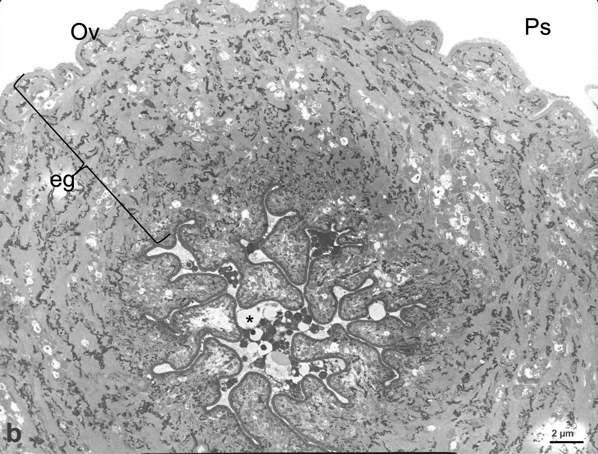

14

a) Fotomicrografía de microscopia de transmisión de la espermateca (Et, ducto delineado con negro) con espermatozoos (esp) en su interior. Las células espermáticas (esp) se caracterizan por su apariencia ameboide (línea azul), núcleo (n) electrodenso y organelos membranosos (om) esféricos continuos en la periferia del citoplasma, adheridos a la membrana.

❮
❯
b) Fotomicrografía de microscopia de transmisión de la válvula espermateco-uterina (línea electrodensa), en cuyo interior se observan vacuolas (*) de líquido glandular del epitelio gonadal (eg del oviducto [Ov]); también se observa el pseudocele (Ps) electrolúcido.